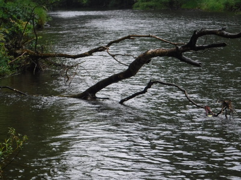
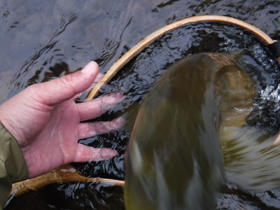
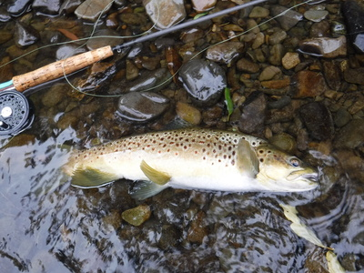
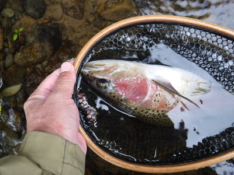
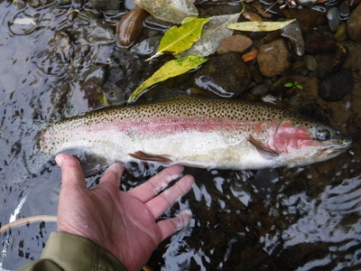
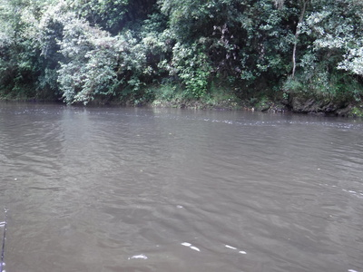
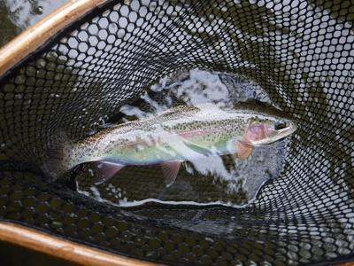
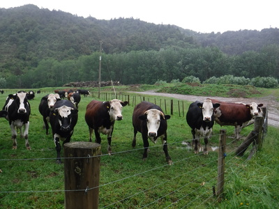
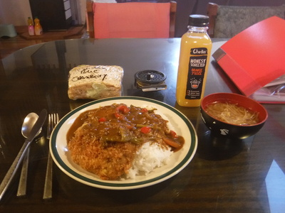

釣行日誌 ＮＺ編 「一期一会の旅：A Sentimental Journey」
望外の喜び
12/01(SAT)-2
ランチを済ませてから20分ほど遡行すると、こちら岸に倒木が数本突き出した淀みが見えた。

『うーん。ここは怪しいな....』
いかにも何かが潜んでいそうな気配がムンムンしている。ロイヤルウルフの結び目をチェックして、下流側の流れ出しから順に探りを入れる。突き出た倒木に両側を囲まれた淀みを狙い、枝に引っかけないよう慎重に投射して浮かんだ白いウイングに、丸っこい頭が出て咥え、ゆっくり沈んだ。
『１、２の３！』
大きくロッドを掲げ、右手でラインを引いて合わせる。茶褐色の大きな魚体が空中に飛び出す。ブラウンだ。幸い倒木の根からは離れる方向に走って流心に向かったので、テンションを保ちつつリールに余分なラインを巻き取ってゆく。ティペットは３Xなので心配は無い。再び下流で跳ねる。さらにもう一度。しばしのやりとりの後で、ようやく弱ったブラウンを引き寄せてから小さいネットでやや強引にランディングした。


45cmほどのよく太ったコンディションの良い１尾。長い遡行が報われた。
魚の顎からフライを外し、流れに戻してやる。突き出た枝の上流にも魅力的な淀みがあるので、水深が深くて冷たかったが流心側に静かに踏み込んで行き、枝を迂回してから、再度ウルフを投げてみる。何せ目が悪くなってきたのでよく見える白いウイングだけが頼りである。静かな水面を流れ下ってきたドライフライが、現れた魚の口にごく静かに吸い込まれた。
『よしっと！』
今度も合わせが決まり、ロッドに重みが載る。岸沿いに並ぶ倒木の根っこに逃げ込もうとする鱒を強引に右側へと引きずり出し、川の真ん中へ誘導する。だいぶ下流に走られたが、小さなネットで無事ランディング。さっきのブラウンよりも高いジャンプを魅せてくれたのは、ほぼ同じサイズの、赤い頬の美しいレインボートラウトだった。この川にはブラウンとレインボーが混生しているのだ。


一見するとまったく捉えどころの無いように見えるこの川の、唯一と言って良いであろうホットスポットに出くわして、連続で２尾釣ることが出来た。望外の喜びであった。
しだいに小雨が降り出し、長い水面に無数の小さな波紋が出来る。これがライズだったらなぁ....（笑）
午後４時近くになり、上流の谷ではけっこうな雨が降ったのか、しだいに水が濁ってきた。渓相はだんだんと良くなって来ており、淵や深瀬の判りやすいポイントが続く。

大淵の流れ込みからドライフライを流し、流れ出しまでドリフトさせた後、ロールキャストで投げ直そうとロッドをあおると急にガクンとショックが伝わった。
『あれれ？』
水面を滑ったフライに下から魚が飛びついたらしい。こんなパターンらしく、可愛いサイズのレインボー。（笑） なんなく寄せてからすくい上げると、大きめのロイヤルウルフをしっかりと咥えていた。

５時近くまで釣り上がったが、気温は低くなり、今日はこれまでに２回も転倒して腰までビッショリ濡れたので寒気で体がジンジンして来た。渓相は良いので、黒いウーリーバガーに替えてしばらくストリーマーの引っ張りを試してみたが、探る範囲が広すぎてあまり効率が良くない。今日はここらで打ち切りと決め、ちょうど作業用の道路が川沿いまで来ていたのでそこから上がり、農道を目指して歩き始める。
一日中退屈している牛たちが、興味津々で集まってきた。

車まで戻って濡れた靴を脱いでいると、小雨の降る中、農家から牧場主がわざわざやって来て声を掛けてくれた。
「ハロー！ 今日はどうだったね？」
「ええ、何とか３尾釣れました。ありがとうございました。」
「ほほう。そりゃ上出来だ。みんなよくこの川に来るけど、あまり釣れてないからな。わしはノエル。よろしくな。」
「僕はゴウと言います。今日は本当にお世話になりました。」
ゴツイ容貌にしては可愛い名前のその牧場主さんに褒められたので嬉しくなって、急いでベストからデジカメを取り出して今日の釣果を見せると、
「おお！こりゃいい鱒だ。このあたりで釣れるのは30cmクラスばかりだと思ったがなぁ。」
「サンキュー！ 奥さんにどうぞよろしく。」
彼が家に帰った後、衣服を着替えて帰途につく。体が冷えたので、ピロンギアの町の公衆トイレによって一休み。
田島家に帰ると、今夜は奥さんがカツカレーを作ってくれており、とても美味しくておなかいっぱい頂いた。熱いカレーとお味噌汁が、胃袋から冷えた体全体に染み渡って行くような気がした。サンドイッチの残りもペロリと片付けた。

寝る前にシャワーを浴びると、ロッドを握る左手にマメが出来ていた。
「６番ロッドを１日振ってこれでは、オレも焼きが回ったなぁ....」
情けなくも苦笑させられた。
釣行日誌ＮＺ編 目次へ
サイトマップ
ホームへ
お問い合わせ